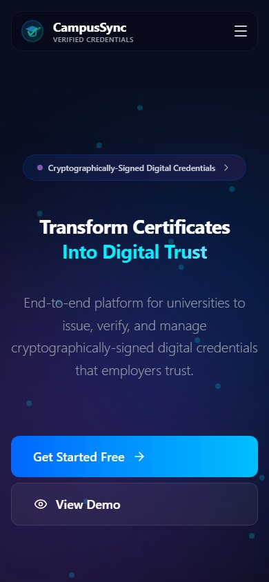

CampusSync.
Credentials, verified.
Careers, connected.
A multi-tenant digital credential platform for universities, employers and placement cells — built around secure tenant isolation, 90+ APIs and interfaces that make verification feel instant.
- Role
- Full-stack developer
- Timeline
- Sep 2025 — Present
- Stack
- Status
- Live · Multi-tenant

One campus.
Too many systems.
Universities still issue and verify credentials through email threads, PDFs and spreadsheets. Employers cannot trust a screenshot, and administrators spend hours reconciling records. CampusSync was designed to make the credential itself verifiable, portable and secure — with a workspace for every role in the chain.
The hard part was not the interface. It was building a platform that could serve multiple institutions from one codebase without ever leaking data between them.
Secure by architecture,
fast by design.
Tenant isolation that holds
A tenant-scoped data model with row-level security enforced at the database layer — not just hidden in the UI. 50+ policies keep every institution’s records separate.
90+ REST endpoints
Authentication, role-based access, credential issuance, verification and administrative workflows, with predictable contracts across the platform.
Roles without role confusion
Separate experiences for administrators, institutions and employers, each scoped to exactly the data and actions they need.
Latency under the surface
Indexing and query refinement brought high-frequency API paths below 100ms, so verification feels immediate rather than transactional.
Measured in milliseconds
and trust.
Trust, made
visible.
The frontend carries the same idea as the backend: clear hierarchy, visible status and no ambiguity about what is verified. Built in Next.js and TypeScript, with a responsive layout that works from a placement office desktop to a phone in the queue.
